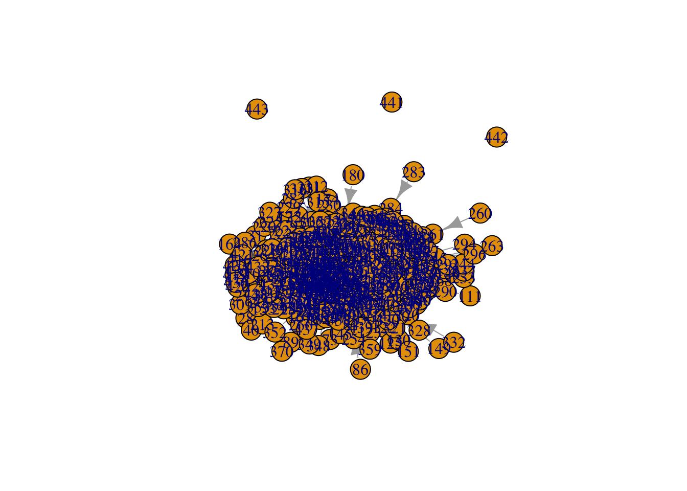
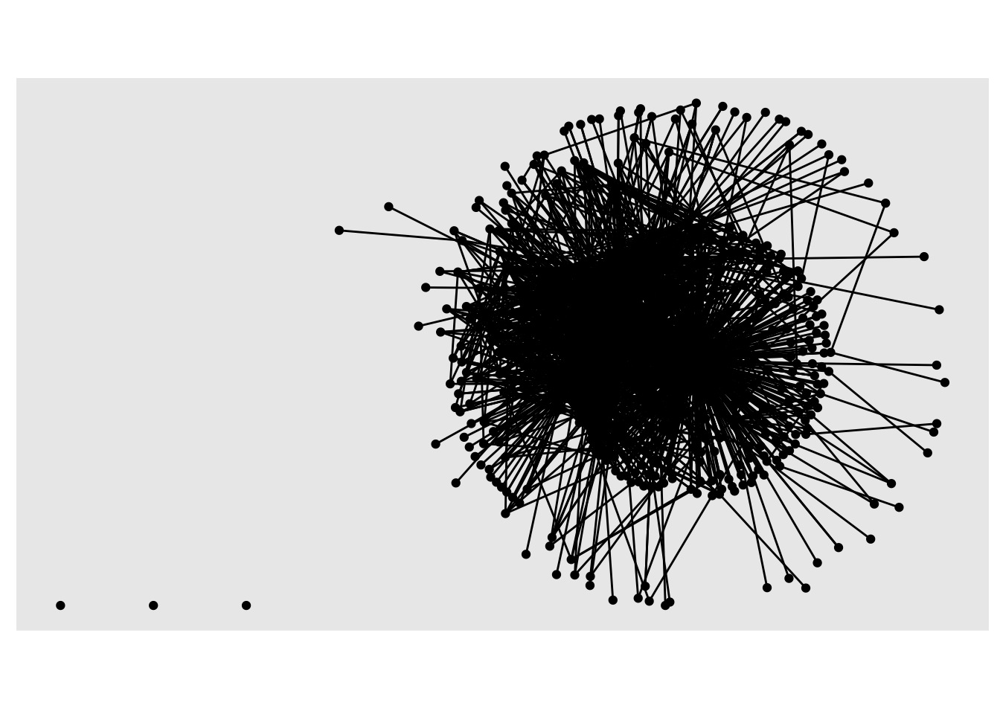

For our second case study, A Tale of Two MOOCs, we move beyond visual depictions of networks from our previous SNA case study and learn to describe networks using common network-level measures. Our analyses are based on A social network perspective on peer supported learning in MOOCs for educators(Kellogg, Booth, and Oliver 2014), and use an open educational dataset prepared by Kellogg and Edelman Kellogg and Edelmann (2015). As we work through each step of the data-intensive workflow (Krumm, Means, and Bienkowski 2018), we will focus on the following topics:
Prepare: Prior to analysis, we’ll take a look at the context from which our data came and load various R packages for data science and network analysis.
Wrangle: In section 2 we make use of the {readr} and {tidygraph} packages to import and prepare relational data stored as as an adjacency matrix.
Explore: In our prior case study, we indirectly used the {igraph} package on which {tidygraph} depends. In section 3, we use {igraph} directly to calculate a range of network-level measures to describe and compare collaboration networks over time.
Model: While we don’t do any modeling of our data in this case study, we dive a little deeper into work of Kellogg et al. to see how modeling can was used to examine MOOC-Ed discussion networks.
Communicate: Finally, we prepare a simple “data product” consisting of a data visualization and/or table that highlights some key findings from our analysis.
In the spring of 2013, The Friday Institute launched the MOOC-Ed Initiative to explore the potential of delivering personalized, high-quality professional development to educators at scale (Kleiman et al., 2013). In collaboration with the Alliance for Excellent Education, the Friday Institute launched this initiative with a 6-week pilot course called Planning for the Digital Learning Transition in K-12 Schools (DLT 1), which was offered again in September 2013 (DLT 2). This course was designed to help school and district leaders plan and implement K-12 digital learning initiatives.
Academics, as well as pundits from traditional and new media, have raised a number of concerns about MOOCs, including the lack of instructional and social supports. Among the core design principles of MOOC-Eds are collaboration and peer-supported learning. It is an assumption of this study that challenges arising form this problem of scale can be addressed by leveraging these massive numbers to develop robust online learning communities.
This mixed-methods case study used both SNA and qualitative methods to better understand peer support in MOOC-Eds through an examination of the characteristics, mechanisms, and outcomes of peer networks. Findings from this study demonstrate that even with technology as basic as a discussion forum, MOOCs can be leveraged to foster these networks and facilitate peer-supported learning. Although this study was limited to two unique cases along the wide spectrum of MOOCs, the methods applied provide other researchers with an approach for better understanding the dynamic process of peer supported learning in MOOCs.
Data Sources
MOOC-Ed registration form. All participants completed a registration form for each MOOC-Ed course. The registration form consists of self-reported demographic data, including information related to their professional role and work setting, years of experience in education, and personal learning goals.
MOOC-Ed discussion forums. All peer interaction, including peer discussion, feedback, and reactions (e.g., likes), take place within the forum area of MOOC-Eds, which are powered by Vanilla Forums. Because of the specific focus on peer supported learning, postings to or from course facilitators and staff were removed from the data set. Finally, analyses described below exclude more passive forms of interactions (i.e., read and reaction logs), and include only postings among peers.
For our second case study, we’ll take a look at data from the original Digital Learning Transition in K-12 Schools (DLT 1) that was not included in this study.
Note: In the data we’re using, instructors have not yet been removed and only direct replies to forum posts have been included, though “weaker” ties like reactions with emoticons and even views of posts were captured in this study.
In the space below, type a brief response to the following questions:
What were some of the steps necessary to construct the edges in this dataset?
YOUR RESPONSE HERE
What “node attributes” are included in this dataset? How might they be used for analysis?
YOUR RESPONSE HERE
What basic network-level descriptives were included in this article?
YOUR RESPONSE HERE
What else do you notice/wonder about this dataset?
YOUR RESPONSE HERE
1b. Identify a Question(s)
A Social Network Perspective on Peer Supported Learning was framed by three primary research questions related to peer supported learning:
What are the patterns of peer interaction and the structure of peer networks that emerge over the course of a MOOC-Ed?
To what extent do participant and network attributes (e.g., homophily, reciprocity, transitivity) account for the structure of these networks?
To what extent do these networks result in the co-construction of new knowledge?
For Lab 2, our exploratory analysis is primarily interested in answering some rather basic questions:
How do the DLT 1 and DLT 2 MOOC-Ed networks compare visually?
How do network-levels measures for each network compare?
What do these visual and mathematical descriptions of our network imply about the similarities and differences in the “patterns of peer-interaction” between each MOOC-Ed?
👉 Your Turn⤵
Based on what you know about networks and the context so far, what other research question(s) might ask we ask in this context that a social network perspective might be able to answer?
YOUR RESPONSE HERE
1b. Load Libraries
Recall that R packages, sometimes referred to as libraries, are shareable collections of R code that can contain functions, data, and/or documentation and extend the functionality of R. Before loading an R package, you must first make sure it has been installed in your environment. You can always check to see which packages have already been installed and loaded into RStudio Cloud by looking at the the Files, Plots, & Packages Pane in the lower right hand corner.
Core SNA Packages
tidygraph 📦
The {tidygraph} package is a huge package that exports 280 different functions and methods, including access to almost all of the dplyr verbs plus a few more, developed for use with relational data. While network data itself is not tidy, it can be envisioned as two tidy tables, one for node data and one for edge data. The {tidygraph} package provides a way to switch between the two tables and uses dplyr verbs to manipulate them. Furthermore it provides access to a lot of graph algorithms with return values that facilitate their use in a tidy workflow.
ggraph 📦
Created by the same developer as {tidygraph}, {ggraph} – pronounced gg-raph or g-giraffe hence the logo – is an extension of {ggplot} aimed at supporting relational data structures such as networks, graphs, and trees. Both packages are more modern and widely adopted approaches data visualization in R.
While ggraph builds upon the foundation of ggplot and its API, it comes with its own self-contained set of geoms, facets, etc., as well as adding the concept of layouts to the grammar of graphics, i.e. the “gg” in ggplot and ggraph.
New (ish) SNA Packages
igraph 📦
Both {tidygraph} and {ggraph} depend heavily igraph network analysis package. The main goals of the igraph package and the collection of network analysis tools it contains are to provide a set of data types and functions for:
pain-free implementation of graph algorithms,
fast handling of large graphs, with millions of vertices (i.e., actors or nodes) and edges,
allowing rapid prototyping via high level languages like R.
👉 Your Turn ⤵
Use the code chunk below to load the {tidyverse}, {tidygraph}, {ggraph}, and {igraph} packages that we’ll be using in this case study. Also load the {janitor} package that we’ll be using to quickly clean up our variable names:
library(janitor)
Attaching package: 'janitor'
The following objects are masked from 'package:stats':
chisq.test, fisher.test
── Conflicts ────────────────────────────────────────── tidyverse_conflicts() ──
✖ dplyr::filter() masks stats::filter()
✖ dplyr::lag() masks stats::lag()
ℹ Use the conflicted package (<http://conflicted.r-lib.org/>) to force all conflicts to become errors
library(igraph)
Attaching package: 'igraph'
The following objects are masked from 'package:lubridate':
%--%, union
The following objects are masked from 'package:dplyr':
as_data_frame, groups, union
The following objects are masked from 'package:purrr':
compose, simplify
The following object is masked from 'package:tidyr':
crossing
The following object is masked from 'package:tibble':
as_data_frame
The following objects are masked from 'package:stats':
decompose, spectrum
The following object is masked from 'package:base':
union
library(tidygraph)
Attaching package: 'tidygraph'
The following object is masked from 'package:igraph':
groups
The following object is masked from 'package:stats':
filter
library(ggraph)
2. Wrangle
In general, data wrangling involves some combination of cleaning, reshaping, transforming, and merging data(Wickham and Grolemund 2016). As highlighted in Estrellado et al. Estrellado et al. (2020), wrangling network data can be even more challenging than other data sources since network data often includes variables about both individuals and their relationships. For data wrangling in this lab, we’re keeping it simple since working with relational data, especially in the form of matrices, is a bit of a departure from our working with rectangular data frames.
For our data wrangling this week, we’re keeping it simple since working with network data is a bit of a departure from our working with rectangular data frames. Our primary goals for Section 2 are learning how to:
Import Data. An obvious and also important first step, we need to “read” our data into R and learn about formatting for edge-lists and node attribute files.
Create a Graph Object. Before performing network analyses, we’ll need to convert our data frames into a graph object for working with relational data.
2a. Import Data
The Edge-List Format
To get started, we need to import, or “read”, our data into R. The function used to import your data will depend on the file format of the data you are trying to import, but R is pretty adept at working with many files types.
Take a look in the /data folder in your Files pane. You should see the following .csv files:
dlt1-edges.csv
dlt1-nodes.csv
The first file dlt1-edges.csv is an edge-list that contains information about each tie, or relation between two actors in a network. In this context, a “tie” is a reply by one participant in the discussion forum to the post of another participant – or in some cases to their own post! These ties between a single actor are called “self-loops” and as we’ll see later, {tidygraph} has a special function to remove these self loops from a sociogram, or network visualization.
The edge-list format is slightly different than other formats you have likely worked with before in that the values in the first two columns each row represent a dyad, or tie between two nodes in a network. An edge-list can also contain other information regarding the strength, duration, or frequency of the relationship, sometime called “weight”, in addition to other “edge attributes.”
In addition to our Sender and Reciever dyad pairs, our DLT 1 dataset contains the following edge attributes:
Sender = Unique identifier of author of comment
Receiver = Unique identifier of identified recipient of comment
Timestamp = Time post or reply was posted
Parent = Primary category or topic of thread
Category = Subcategory or subtopic of thread
Thread_id = Unique identifier of a thread
Comment_id = Unique identifier of a comment\
Let’s use the read_csv() function from the {readr} and {janitor} packages introduced in previous units to read in our edge-list and clean up the variables names:
# A tibble: 2,529 × 9
sender receiver timestamp discussion_title discussion_category
<chr> <chr> <chr> <chr> <chr>
1 360 444 4/4/13 16:32 Most important change for y… Group N
2 356 444 4/4/13 18:45 Most important change for y… Group D-L
3 356 444 4/4/13 18:47 DLT Resources—Comments and … Group D-L
4 344 444 4/4/13 18:55 Most important change for y… Group O-T
5 392 444 4/4/13 19:13 Most important change for y… Group U-Z
6 219 444 4/4/13 19:16 Most important change for y… Group M
7 318 444 4/4/13 19:26 Most important change for y… Group M
8 4 444 4/4/13 19:44 Most important change for y… Group N
9 355 356 4/4/13 20:12 DLT Resources—Comments and … Group D-L
10 355 444 4/4/13 20:13 Most important change for y… Group D-L
# ℹ 2,519 more rows
# ℹ 4 more variables: parent_category <chr>, discussion_identifier <chr>,
# comment_id <chr>, discussion_id <chr>
Note the addition of the col_types = argument for changing the column types to character strings since the numbers for those particular columns indicate actors (Sender and Reciever) and attributes (Comment_ID and Discussion_Id). We also skipped the Category Text since this was left blank for deidentification purposes.
👉 Your Turn⤵
Consider the example pictured below of a discussion thread from the Planning for the Digital Learning Transition in K-12 Schools (DLT 1) where our data originated. This thread was initiated by participant I, so the comments by J and N are considered to be directed at I. The comment of B, however, is a direct response to the comment by N as signaled by the use of the quote-feature as well as the explicit mentioning of N’s name within B’s comment.
Now answer the following questions as they relate to the DLT 1 edge-list we just read into R.
Which actors in this thread are the Sender and the Reciever? Which actor is both?
YOUR RESPONSE HERE
How many dyads are in this thread? Which pairs of actors are dyads?
YOUR RESPONSE HERE
Sidebar: Unfortunately, these types of nuances in discussion forum data as illustrated by this simple example are rarely captured through automated approaches to constructing networks. Fortunately, the dataset you are working with was carefully reviewed to try and capture more accurately the intended recipients of each reply.
Node Attributes
The second file we’ll be using contains all the nodes or actors (i.e., participants who posted to the discussion forum) as well as some of their attributes such as gender and years of experience in education.
Carolan (2013) notes that most social network analyses include variables that describe attributes of actors, ones that are either categorical (e.g., sex, race, etc.) or continuous in nature (e.g., test scores, number of times absent, etc.). These attributes that can be incorporated into a network graph or model, making it more informative and can aid in testing or generating hypotheses.
These attribute variables are typically included in a rectangular array, or dataframe, that mimics the actor-by-attribute that is the dominant convention in social science, i.e. rows represent cases, columns represent variables, and cells consist of values on those variables.
As an aside, Carolan also refers to this historical preference by researchers for “actor-by-attribute” data, in the absence of relational data in which the actor has been removed their social context, as the “sociological meatgrinder” in action. Specifically, this historical approach assumes that the actor does not interact with anyone else in the study and that outcomes are solely dependent of the characteristics of the individual.
Let’s use the code chunk below to import the dlt1-nodes.csv attribute file and be sure to set the following variables as character data types: UID, Facilitator, expert, connect.
Now use the code chunk below to inspect the data you imported and complete the matching exercise that follows:
#YOUR CODE HEREdlt1_actors
# A tibble: 445 × 13
uid facilitator role1 experience experience2 grades location region country
<chr> <chr> <chr> <dbl> <chr> <chr> <chr> <chr> <chr>
1 1 0 libm… 1 6 to 10 secon… VA South US
2 2 0 clas… 1 6 to 10 secon… FL South US
3 3 0 dist… 2 11 to 20 gener… PA North… US
4 4 0 clas… 2 11 to 20 middle NC South US
5 5 0 othe… 3 20+ gener… AL South US
6 6 0 clas… 1 4 to 5 gener… AL South US
7 7 0 inst… 2 11 to 20 gener… SD Midwe… US
8 8 0 spec… 1 6 to 10 secon… BE Inter… BE
9 9 0 clas… 1 6 to 10 middle NC South US
10 10 0 scho… 2 11 to 20 middle NC South US
# ℹ 435 more rows
# ℹ 4 more variables: group <chr>, gender <chr>, expert <chr>, connect <chr>
Match up the attributes included in the node file with the following codebook descriptors. The first one has been done as an example.
Facilitator = Identification of course facilitator (1 = instructor)
Dummy variable for whether participants listed networking and collaboration with others as one of their course goals on the registration form
Identifier of “expert panelists” invited to course to share experience through recorded Q&A
Identification of course facilitator (1 = instructor)
Professional role (e.g., teacher, librarian, administrator)
Years of experience as an educator
Works with elementary, middle, and/or high school students
Initial assignment of discussion group
RStudio Tip: Importing data and dealing with data types can be a bit tricky, especially for beginners. Fortunately, RStudio has an “Import Dataset” feature in the Environment Pane that can help you use the {readr} package and associated functions to greatly facilitate this process.
2b. Create Network Object
As demonstrated in our previous case study, we first need to convert the data frames that we imported into an network object before we can begin using many of the functions from our network packages for summarizing and visualizing our DLT 1 network.
Convert to Graph Object
To do that, we will use the tbl_graph() function from the {tidygraph} package. Note that I included the eval=FALSE argument in the code block below to prevent this code from running when we knit our final document. Otherwise it will produce an error since we can’t include help documentation in our knitted HTML file.
Run the following code to take a look at the help documentation for this function:
?tbl_graph
You probably saw that this particular function takes the following three arguments, two of which are data frames:
edges = A data.frame containing information about the edges in the graph. The terminal nodes of each edge must either be encoded in a to and from column, or be in the two first columns.
nodes = a node list that starts with a column of node IDs. Any following columns are interpreted as node attributes.
node_key = The name of the column in nodes that character represented to and from columns should be matched against.
directed = determines whether or not to create a directed graph.
Run the following code to specify our ties data frame as the edges of our network, our actors data frame for the vertices of our network and their attributes, and indicate that this is indeed a directed network.
Take a look at the output for our dlt1_network and answer the questions that follow:
#YOUR CODE HEREdlt1_network
# A tbl_graph: 445 nodes and 2529 edges
#
# A directed multigraph with 4 components
#
# Node Data: 445 × 13 (active)
uid facilitator role1 experience experience2 grades location region country
<chr> <chr> <chr> <dbl> <chr> <chr> <chr> <chr> <chr>
1 1 0 libm… 1 6 to 10 secon… VA South US
2 2 0 clas… 1 6 to 10 secon… FL South US
3 3 0 dist… 2 11 to 20 gener… PA North… US
4 4 0 clas… 2 11 to 20 middle NC South US
5 5 0 othe… 3 20+ gener… AL South US
6 6 0 clas… 1 4 to 5 gener… AL South US
7 7 0 inst… 2 11 to 20 gener… SD Midwe… US
8 8 0 spec… 1 6 to 10 secon… BE Inter… BE
9 9 0 clas… 1 6 to 10 middle NC South US
10 10 0 scho… 2 11 to 20 middle NC South US
# ℹ 435 more rows
# ℹ 4 more variables: group <chr>, gender <chr>, expert <chr>, connect <chr>
#
# Edge Data: 2,529 × 9
from to timestamp discussion_title discussion_category parent_category
<int> <int> <chr> <chr> <chr> <chr>
1 360 444 4/4/13 16:32 Most important c… Group N Units 1-3 Disc…
2 356 444 4/4/13 18:45 Most important c… Group D-L Units 1-3 Disc…
3 356 444 4/4/13 18:47 DLT Resources—Co… Group D-L Units 1-3 Disc…
# ℹ 2,526 more rows
# ℹ 3 more variables: discussion_identifier <chr>, comment_id <chr>,
# discussion_id <chr>
How does the number of node and edges in our DLT 1 network compare to the totals reported for the DLT 2, the second iteration of this MOOC-Ed, reported on in our guiding study?
YOUR RESPONSE HERE
Do the number of nodes and edges are in our network match the number of observations in our node and edge list .csv files? Hint: Check the Environment pane.
YOUR RESPONSE HERE
Our output notes that our network is a directed multigraph, indicating that some dyads may have multiple edges. Why might that be?
YOUR RESPONSE HERE
3. Explore
Relevant to our case study of DLT 1 & 2 MOOC-Eds, Carolyn notes in SNA and Education Carolan (2014) that:
… to address questions that probe a network’s dynamics (i.e., its change over time), it is necessary to first figure out what the network looks like at one point in time, what is commonly referred to as the network’s topography.
In order to describe a network’s topography, social network researchers utilize an array of algorithms and indices to describe both visually and numerically different characteristics of social networks. These algorithms and indices rely on both simple and somewhat sophisticated mathematical computation.
In this section we revisit the {tidygraph} and {ggraph} packages for creating sociograms and computing basic node and edge-level measures, and then introduce some key functions from the {igraph} package for obtaining complete network-level measures.
3a. Visually Describe the Network
One of the defining characteristics of the social network perspective is its use of graphic imagery to represent actors and their relations with one another. To emphasize this point, Carolyn (2013) reported that:
The visualization of social networks has been a core practice since its foundation more than 90 years ago and remains a hallmark of contemporary social network analysis.
Network visualization can be used for a variety of purposes, ranging from highlighting key actors to even serving as works of art. Katya Ognyanova’s also excellent tutorial on Static and Dynamic Network Visualization with R helps illustrate the variety of goals a good network visualization can accomplish.
Recall from our previous SNA case study examining student friendships in middle school that we introduced the dead simple plot() function built into R, as well as the `autograph()` function from the {ggraph} package to quickly generate a sociogram showing the nodes and edges in our network.
Let’s supply our year-1-network object as the first argument to each of these functions and see what they produce:
plot(dlt1_network)

autograph(dlt1_network)

Yuck! Neither a aesthetically pleasing plot, nor terribly functional. As indicated by our tidy graph output from section 1, however, we can see that there is one large network component and three additional components consisting of isolated MOOC-Ed participants who neither sent or received replies to their colleagues.
As you may have realized already, the utility of the basic plot() function is not very useful for large networks like this one. Fortunately, the {ggraph} package that we learned about in Lab 1 includes a plethora of plotting parameters for graph layouts, edges and nodes to improve the visual design and readability of network graphs.
Note: If you’re having trouble seeing the plot you can run the code in the console and see the plot in the Viewer pane or click the little arrow/window icon in the output of the code chunk to open the plot in a new window and resize.
Sociograms with ggraph
Recall from Lab 1 that just like it’s {ggplot} counterpart for making more traditional charts and graphs, there is a minimal code template for producing a basic plot with {ggraph}. Specifically, it requires 3 main functions
ggraph() takes care of setting up the plot object along with creating the layout of the graph (default = “stress”).
geom_node_*() functions and their associated arguments add and modify the nodes of the network plot.
geom_edge_*() functions and their associated arguments add and modify the edges of the network plot.
These three core functions can be modified though different arguments or by adding additional layers of functions to change the visual aesthetics of your sociogram to highlight key characteristics of the network, like edge weight or central actors.
Let generate the same basic plot above but explicitly call our ggraph, node, and edge functions:
We won’t spend a lot of time on polishing our graph here. We’ll save that effort for when we are ready to communicate our findings to a specific audience, but lets make some quick functional and aesthetic changes: Run the following code to:
Change the graph layout to the Fruchterman-Reingold (FR) layout using the layout = "fr" argument to help highlight areas of clustering;
Decrease the transparency of our edges using the alpha = argurment the to better highlight the nodes;
Change the size of our nodes using the local_size() function to make those more connected more visible;
Change the color of our nodes based on their school or district role using the color= argument; and,
Add the theme_graph() layer to remove the gray background.
That is perhaps slightly better, but before sharing with an education partner, I would likely do quite a bit more clean up to highlight key findings specific to network measures that we’ll explore in the next section.
Note: If you’re having difficulty seeing the sociogram in the small R Markdown code chunk, you can copy and paste the code in the console and it will show in the Viewer pan and then you can enlarge and even save as an image file.
👉 Your Turn ⤵
Use the code chunk below created a sociogram for the DLT 2 MOOC network and answer the questions that follow:
How does the DLT 2 network compare to DLT 1? What are some similarities and differences?
YOUR RESPONSE HERE
How might you modify this graph to make it more insightful and useful? For ideas check out these nework viz tutorials here, here and here.
YOUR RESPONSE HERE
3b. Describe the Network Mathematically
This section include some of the most common measures used to describe the features of complete networks, both at the network-level measures and also for individual nodes as well. Recall from our essential readings that:
Network-level structural measures are those that are calculated from the entire network. Therefore, they provide an excellent snapshot of the network’s structure—the pattern of relations among the network’s actors.
In addition to providing an overall summary of the network, these measures provide a concrete means to compare relations such as whether the friendship, social support, and advice seeking networks within the same fraternity, for example, are comparable. In our case study, for example, were are
1. Network Size
One simple but important property of a social network is its size, or the number of nodes and edges in a network. As Carolan notes:
Size plays an important role in determining what happens in the network— what resources are exchanged among actors, for example… Size affects other network measures, but on a conceptual level, it influences the structure of relations, as actors only have so many resources and capacities for creating and maintaining ties with others.
As we saw in the previous section, the dlt1_network output provided us with basic information about our networks size, including the number of nodes and edges in our network. The {igraph} package also has some basic functions for retrieving the number of nodes and edges in a network.
Run the following code chunk to use the gorder() and gsize() functions obtain the number of vertices and edges respectively:
gorder(dlt1_network)
[1] 445
gsize(dlt1_network)
[1] 2529
2. Centralization
A key structural property of complete networks, and often the focus of network studies is the concept of centralization, or the extent to which relations are focused on one or a small set of actors. Centralization is an important concept in network because, as Carolan notes:
Central actors likely wield a disproportionate amount of influence on the network. Therefore, high centralization provides fewer actors with more power and control.
Centralization can be based on a number of different measures, but degree is one of the most common. Degree refers to the number of ties an actor either sends (out-degree), receives (in-degree), or in the case of a non-directed network or both sent and received in a directed network, simply just “degree” for all actors to which one is connected.
The centr_degree() function in {igraph} provides a centralization score based on the metric selected, as well as the degree for each actors in the network. Let’s first take a look at the centralization measure based on number of actors individuals have ties with regardless of directionality:
The first variable $res provides node-level centrality scores. So for example, the first MOOC-Ed participant in our network is connected to 53 other actors in the network. The $centralization variable provides our actual centrality score, which at 0.64 indicates a rather centralized network as was apparent from our sociogram.
Let’s also take a quick look at centralization scores for in-degree and out-degree:
Again, we still have a rather centralized graph, especially for in-degree which suggest that a few individual may be receiving and outsized share of replies.
While our primary concern is complete network-level measures so we can compare DLT 1 & DLT 2 networks, obtaining node-level measures is also very useful for helping to describe the network, particularly for visualization. For example, we might want to adjust the size of nodes in a network based on degree, so those actors with more connections stand out more prominently.
The {tidygraph} package has an unique function called activate() that allows us to treat the nodes and edges in our network object as if they were a standard data frame that we can then apply standard tidyverse functions to like select(), filter(), and mutate().
The latter function, mutate(), can be use to create new variables for node-level measures of degree, in-degree, and out-degree using the centrality_degree() function in the {tidygraph} package.
Run the following code to add each actor’s in-degree (i.e. number of replies received) to our DLT 1 network and assign the output dlt1_network again so the results are saved:
# A tbl_graph: 445 nodes and 2529 edges
#
# A directed multigraph with 4 components
#
# Node Data: 445 × 14 (active)
uid facilitator role1 experience experience2 grades location region country
<chr> <chr> <chr> <dbl> <chr> <chr> <chr> <chr> <chr>
1 1 0 libm… 1 6 to 10 secon… VA South US
2 2 0 clas… 1 6 to 10 secon… FL South US
3 3 0 dist… 2 11 to 20 gener… PA North… US
4 4 0 clas… 2 11 to 20 middle NC South US
5 5 0 othe… 3 20+ gener… AL South US
6 6 0 clas… 1 4 to 5 gener… AL South US
7 7 0 inst… 2 11 to 20 gener… SD Midwe… US
8 8 0 spec… 1 6 to 10 secon… BE Inter… BE
9 9 0 clas… 1 6 to 10 middle NC South US
10 10 0 scho… 2 11 to 20 middle NC South US
# ℹ 435 more rows
# ℹ 5 more variables: group <chr>, gender <chr>, expert <chr>, connect <chr>,
# in_degree <dbl>
#
# Edge Data: 2,529 × 9
from to timestamp discussion_title discussion_category parent_category
<int> <int> <chr> <chr> <chr> <chr>
1 360 444 4/4/13 16:32 Most important c… Group N Units 1-3 Disc…
2 356 444 4/4/13 18:45 Most important c… Group D-L Units 1-3 Disc…
3 356 444 4/4/13 18:47 DLT Resources—Co… Group D-L Units 1-3 Disc…
# ℹ 2,526 more rows
# ℹ 3 more variables: discussion_identifier <chr>, comment_id <chr>,
# discussion_id <chr>
Let’s temporarily convert to a data frame so we can get a better look at our nodes and the measure of degree instead of local_size() that we just created.
dlt1_network |>as_tibble()
# A tibble: 445 × 14
uid facilitator role1 experience experience2 grades location region country
<chr> <chr> <chr> <dbl> <chr> <chr> <chr> <chr> <chr>
1 1 0 libm… 1 6 to 10 secon… VA South US
2 2 0 clas… 1 6 to 10 secon… FL South US
3 3 0 dist… 2 11 to 20 gener… PA North… US
4 4 0 clas… 2 11 to 20 middle NC South US
5 5 0 othe… 3 20+ gener… AL South US
6 6 0 clas… 1 4 to 5 gener… AL South US
7 7 0 inst… 2 11 to 20 gener… SD Midwe… US
8 8 0 spec… 1 6 to 10 secon… BE Inter… BE
9 9 0 clas… 1 6 to 10 middle NC South US
10 10 0 scho… 2 11 to 20 middle NC South US
# ℹ 435 more rows
# ℹ 5 more variables: group <chr>, gender <chr>, expert <chr>, connect <chr>,
# in_degree <dbl>
Now we can also adjust the size of more central actors in our sociogram from above using in_degree instead of local_size() to highlight those actors who are receiving and outsized share of replies:
Since we know the number of ties, or edges, in our network, we can examine the overall density of our network, which is directly linked to network size. As Carolan explains:
Density refers to the number of ties in the network reported as a fraction of the total possible number of ties… The closer this number is to 1.0, the denser the network.
The igraph packages has two different function for calculating the density of a network, edge_density() and graph.density(), but both yield the exact same result. The edge_density() function is the more recent function and should be used, but let’s try them both out:
edge_density(dlt1_network)
[1] 0.01279988
graph.density(dlt1_network)
Warning: `graph.density()` was deprecated in igraph 2.0.0.
ℹ Please use `edge_density()` instead.
[1] 0.01279988
As you can see, our collaboration network in DLT 1 has a VERY low density. Interpretation of the measure greatly depends on context, however. In smaller networks, for example, it may suggest that collaboration in the network is quite limited and may impact the flow of information, resources, and innovations among actors. In a large network like this one, however, low density is very common. Moreover, even though someone may not have given or received replies very often to others, they still benefit in that since this in an online discussion, all information shared is visible to all participants.
4. Reciprocity
Reciprocity is an important measure because it reveals the direction through which resources in networks flow and whether or not it flows in both directions. The tendency towards reciprocity in most networks, sometimes referred to as the “norm” of reciprocity, has been acknowledge by ancient writers such as Cicero who stated:
There is no duty more indispensable than that of returning a kindness… all men distrust one forgetful of a benefit.
At the network-level, reciprocity is defined as reciprocity is a measure of the likelihood of vertices in a directed network to be mutually linked. Using the reciprocity() function, we can directly calculate this measure:
reciprocity(dlt1_network)
[1] 0.1997544
As illustrated by the reciprocity measure above, the tendency towards reciprocated ties is, surprisingly, very low in our DLT 1 network.
And if we wanted to highlight this lack of reciprocity in a network visual, we could use the edge_is_mutual() function to create a new edge variable called reciprocated that indicates whether the tie is mutual or asymmetric.
# A tbl_graph: 445 nodes and 2529 edges
#
# A directed multigraph with 4 components
#
# Edge Data: 2,529 × 10 (active)
from to timestamp discussion_title discussion_category parent_category
<int> <int> <chr> <chr> <chr> <chr>
1 360 444 4/4/13 16:32 Most important … Group N Units 1-3 Disc…
2 356 444 4/4/13 18:45 Most important … Group D-L Units 1-3 Disc…
3 356 444 4/4/13 18:47 DLT Resources—C… Group D-L Units 1-3 Disc…
4 344 444 4/4/13 18:55 Most important … Group O-T Units 1-3 Disc…
5 392 444 4/4/13 19:13 Most important … Group U-Z Units 1-3 Disc…
6 219 444 4/4/13 19:16 Most important … Group M Units 1-3 Disc…
7 318 444 4/4/13 19:26 Most important … Group M Units 1-3 Disc…
8 4 444 4/4/13 19:44 Most important … Group N Units 1-3 Disc…
9 355 356 4/4/13 20:12 DLT Resources—C… Group D-L Units 1-3 Disc…
10 355 444 4/4/13 20:13 Most important … Group D-L Units 1-3 Disc…
# ℹ 2,519 more rows
# ℹ 4 more variables: discussion_identifier <chr>, comment_id <chr>,
# discussion_id <chr>, reciprocated <lgl>
#
# Node Data: 445 × 14
uid facilitator role1 experience experience2 grades location region country
<chr> <chr> <chr> <dbl> <chr> <chr> <chr> <chr> <chr>
1 1 0 libme… 1 6 to 10 secon… VA South US
2 2 0 class… 1 6 to 10 secon… FL South US
3 3 0 distr… 2 11 to 20 gener… PA North… US
# ℹ 442 more rows
# ℹ 5 more variables: group <chr>, gender <chr>, expert <chr>, connect <chr>,
# in_degree <dbl>
Let’s now add this new variable to our sociogram to highlight reciprocated ties in our DLT 1 network:
As you can see, there only appear to be seven dyads with reciprocated ties!
5. Transitivity & Clustering
Transitivity, also known as the “friend of a friend” phenomenon, focuses on triads, or any “triple” of actors, rather than dyads like reciprocity. Just like a networks tendency towards reciprocity, there is also a tendency toward transitivity. For example, in the figure below Teacher A collaborates with Teacher B and Teacher B collaborates with Teacher C, then Teacher A is more likely at some point to collaborates with Teacher C and “complete” the triangle and less likely to collaborate with Teacher E since they do now share a connection:
As Carolan points out, establishing a network’s transitivity is important, as it is theoretically connected to actors’ tendencies to divide into exclusive subgroups or cluster over time, especially around positive relations such as friendship. While the algorithms behind network transitivity are not trivial, the defining network transitivity is rather straightforward:
Transitivity measures the probability that the adjacent vertices of a vertex are connected. This is sometimes also called the clustering coefficient.
The transitivity() function provides a convenient means to calculate a network-level transitive measures:
transitivity(dlt1_network)
[1] 0.08880774
For our particular network, a very small value of 8% is not too surprising since, again, this is rather large network.
6. Diameter & Distance
Whereas transitivity focuses on the importance of certain configurations of triads, diameter and distance are more straightforward. A network’s diameter simply refers to the longest path between any two actors. A related measure is the average path length, which measures the mean distance between all pairs of actors in the network.
The two functions for computing diameter and average path length are diameter() and mean_distance() respectively. Let’s apply both of these to our dlt1_network object:
diameter(dlt1_network)
[1] 8
mean_distance(dlt1_network)
[1] 3.030694
Carolan notes that both diameter and average path length are important network-level structural properties. Similar to diameter and distance measures for our DLT 1 network above, he notes that a network with a large diameter and small average path length suggests a structure in which there are parts of the network that some network actors may be unable to access.
👉 Your Turn ⤵
Use the code chunk below to calculate the following measures for the DLT 2 network, then answer the questions below:
How do network-level measures for DLT 1 and DLT 2 collaboration compare? What are some similarities and differences?
4. Model
As highlighted in Chapter 3 of Data Science in Education Using R, the Model step of the data science process entails “using statistical models, from simple to complex, to understand trends and patterns in the data.” The authors note that while descriptive statistics and data visualization during the Explore step can help us to identify patterns and relationships in our data, statistical models can be used to help us determine if relationships, patterns and trends are actually meaningful.
We will not explore the use of models for SNA until Lab 4, but recall from above that our study was guided by the following questions:
What are the patterns of peer interaction and the structure of peer networks that emerge over the course of a MOOC-Ed?
To what extent do participant and network attributes (e.g., homophily, reciprocity, transitivity) account for the structure of these networks?
To what extent do these networks result in the co-construction of new knowledge?
To address Question 1, actors in the network were categorized into distinct mutually exclusive groups using the core-periphery and regular equivalence functions of UCINET. The former used the CORR algorithm to divide the network into actors that are part of a densely connected subgroup, or “core”, from those that are part of the sparsely connected periphery. Regular equivalence employs the REGE blockmodeling algorithm to partition, or group, actors in the network based on the similarity of their ties to others with similar ties. In essence, blockmodeling provides a systematic way for categorizing educators based on the ways in which they interacted with peers.
As we saw upon just a basic visual inspection of our network during the Explore section, there was a small core of highly connected participants surrounded by those on the “periphery,” or edge, of the network with very few connections. In the DLT 2 course, those on the periphery made up roughly 90% of network! The study also found relatively high levels of reciprocation, but also found that roughly a quarter of participants were characterized as “brodcasters” – educators who initiated a discussion thread, but neither reciprocated with those who replied, nor posted to threads initiated by others.
To address Question 2, this study use the exponential family of random graph models (ERGM; also known as p* models), which provide a statistical approach to network modeling that addresses the complex dependencies within networks. ERGMs predict network ties and determine the statistical likelihood of a given network structure, based on an assumed dependency structure, the attributes of the individuals (e.g., gender, popularity, location, previous ties) and prior states of the network.
As highlighted in Chapter 3 of Data Science in Education Using R, the Model step of the data science process entails “using statistical models, from simple to complex, to understand trends and patterns in the data.”
A developing area of network research is the advancement of statistical models and tools to examine network change over time (Carolan 2014). These models are used to empirically test if changes in key structure measures are statistically significant, and also explain potential mechanisms driving those changes. Stochastic actor-based models, for example, are a family of models that have the purpose of representing network dynamics on the basis of observed longitudinal data. These stochastic actor-based models allow users to test hypotheses about these tendencies toward reciprocity, homophily, and transitivity over time and to estimate parameters expressing their strengths while controlling for other tendencies (“confounders”).
5. Communicate
The final step in the workflow/process is sharing the results of your analysis with wider audience. Krumm et al. Krumm, Means, and Bienkowski (2018) have outlined the following 3-step process for communicating with education stakeholders findings from an analysis:
Select. Communicating what one has learned involves selecting among those analyses that are most important and most useful to an intended audience, as well as selecting a form for displaying that information, such as a graph or table in static or interactive form, i.e. a “data product.”
Polish. After creating initial versions of data products, research teams often spend time refining or polishing them, by adding or editing titles, labels, and notations and by working with colors and shapes to highlight key points.
Narrate. Writing a narrative to accompany the data products involves, at a minimum, pairing a data product with its related research question, describing how best to interpret the data product, and explaining the ways in which the data product helps answer the research question and might be used to inform new analyses or a “change idea” for improving student learning.
Render File
For your SNA Badge, you will have an opportunity to create a simple “data product” designed to illustrate some insights gained from your analysis and ideally highlight an action step or change idea that can be used to improve learning or the contexts in which learning occurs.
For now, we will wrap up this case study by converting your work to an HTML file that can be published and used to communicate your learning and demonstrate some of your new R skills. To do so, you will need to “render” your document by clicking the Render button in the menu bar at that the top of this file.
Rendering a document does two important things:
checks through all your code for any errors; and,
creates a file in your directory that you can use to share you work .
👉 Your Turn ⤵
Now that you’ve finished your first case study, click the “Render” button in the toolbar at the top of your document to covert this Quarto document to a HTML web page, just one of the many publishing formats you can create with Quarto documents.
If the files rendered correctly, you should now see a new file named sna-2-case-study-R.html in the Files tab located in the bottom right corner of R Studio. If so, congratulations, you just completed the getting started activity! You’re now ready for the unit Case Studies that we will complete during the third week of each unit.
Important
If you encounter errors when you try to render, first check the case study answer key located in the files pane and has the suggested code for the Your Turns. If you are still having difficulties, try copying and pasting the error into Google or ChatGPT to see if you can resolve the issue. Finally, contact your instructor to debug the code together if you’re still having issues.
Publish File
There are a wide variety of ways to publish documents, presentations, and websites created using Quarto. Since content rendered with Quarto uses standard formats (HTML, PDFs, MS Word, etc.) it can be published anywhere. Additionally, there is a quarto publish command available for easy publishing to various popular services such as Quarto Pub, Posit Cloud, RPubs , GitHub Pages, or other services.
👉 Your Turn ⤵
Choose of of the following methods described below for publishing your completed case study.
Publishing with Quarto Pub
Quarto Pub is a free publishing service for content created with Quarto. Quarto Pub is ideal for blogs, course or project websites, books, reports, presentations, and personal hobby sites.
It’s important to note that all documents and sites published to Quarto Pub are publicly visible. You should only publish content you wish to share publicly.
To publish to Quarto Pub, you will use the quarto publish command to publish content rendered on your local machine or via Posit Cloud.
Before attempting your first publish, be sure that you have created a free Quarto Pub account.
The quarto publish command provides a very straightforward way to publish documents to Quarto Pub.
For example, here is the Terminal command to publish a generic Quarto document.qmd to each of this service:
Terminal
quarto publish quarto-pub document.qmd
You can access your the terminal from directly Terminal Pane in the lower left corner as shown below:
The actual command you will enter into your terminal to publish your orientation case study is:
quarto publish quarto-pub sna-2-case-study-R.qmd
When you publish to Quarto Pub using quarto publish an access token is used to grant permission for publishing to your account. The first time you publish to Quarto Pub the Quarto CLI will automatically launch a browser to authorize one as shown below.
Terminal
$ quarto publish quarto-pub? Authorize (Y/n)›❯ In order to publish to Quarto Pub you need toauthorize your account. Please be sure you arelogged into the correct Quarto Pub account in your default web browser, then press Enter or 'Y' to authorize.
Authorization will launch your default web browser to confirm that you want to allow publishing from Quarto CLI. An access token will be generated and saved locally by the Quarto CLI.
Once you’ve authorized Quarto Pub and published your case study, it should take you immediately to the published document. See my example Orientation Case Study complete with answer key here: https://sbkellogg.quarto.pub/laser-orientation-case-study-key.
After you’ve published your first document, you can continue adding more documents, slides, books and even publish entire websites!
Publishing with R Pubs
An alternative, and perhaps the easiest way to quickly publish your file online is to publish directly from RStudio using Posit Cloud or RPubs. You can do so by clicking the “Publish” button located in the Viewer Pane after you render your document and as illustrated in the screenshot below.
Similar to Quarto Pub, be sure that you have created a free Posit Cloud or R Pub account before attempting your first publish. You may also need to add your Posit Cloud or R Pub account before being able to publish.
Congratulations, you’ve completed the case study! You’re now ready to dig into the essential readings and try out your next SNA LASER Badge!
Estrellado, Ryan A., Emily A. Freer, Jesse Mostipak, Joshua M. Rosenberg, and Isabella C. Velásquez. 2020. Data Science in Education Using r. Routledge. https://doi.org/10.4324/9780367822842.
Wickham, Hadley, and Garrett Grolemund. 2016. R for Data Science: Import, Tidy, Transform, Visualize, and Model Data. " O’Reilly Media, Inc.". https://r4ds.had.co.nz.


 Render button in the menu bar at that the top of this file.
Render button in the menu bar at that the top of this file.